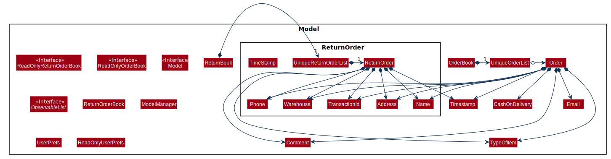

By: CS2103T-W12-01 Since: Jan 2020 Licence: MIT
- 1. Setting up
- 2. Design
- 3. Implementation
- 4. Documentation
- 5. Testing
- 6. Dev Ops
- Appendix A: Product Scope
- Appendix B: User Stories
- Appendix C: Use Cases
- Appendix D: Non Functional Requirements
- Appendix E: Glossary
- Appendix F: Product Survey
- Appendix G: Instructions for Manual Testing
- G.1. Launch Delino
- G.2. Inserting an order
- G.3. Deleting an order
- G.4. Edit orders
- G.5. Import orders
- G.6. List orders
- G.7. Returning an order
- G.8. Search an order
- G.9. Mark order as Done
- G.10. Clear orders
- G.11. Show
- G.12. Obtain all nearby orders based on area or postal sector
- G.13. Undo previous action
- G.14. Saving data
- G.15. Exit
1. Setting up
Refer to the guide here.
2. Design
2.1. Architecture
The Architecture Diagram given above explains the high-level design of the App. Given below is a quick overview of each component.
The .puml files used to create diagrams in this document can be found in the diagrams folder.
Refer to the Using PlantUML guide to learn how to create and edit diagrams.
|
-
At app launch: Initializes the components in the correct sequence, and connects them up with each other.
-
At shut down: Shuts down the components and invokes cleanup method where necessary.
Commons represents a collection of classes used by multiple other components.
The following class plays an important role at the architecture level:
-
LogsCenter: Used by many classes to write log messages to the App’s log file.
The rest of the App consists of four components.
Each of the four components
-
Defines its API in an
interfacewith the same name as the Component. -
Exposes its functionality using a
{Component Name}Managerclass.
For example, the Logic component (see the class diagram given below) defines it’s API in the Logic.java interface and exposes its functionality using the LogicManager.java class.
How the architecture components interact with each other
The Sequence Diagram below shows how the components interact with each other for the scenario where the user issues the command delete -o 1.
delete -o 1 commandThe sections below give more details of each component.
2.2. UI component
API : Ui.java
The UI consists of a MainWindow that is made up of parts e.g.CommandBox, ResultDisplay, PersonListPanel, StatusBarFooter etc. All these, including the MainWindow, inherit from the abstract UiPart class.
The UI component uses JavaFx UI framework. The layout of these UI parts are defined in matching .fxml files that are in the src/main/resources/view folder. For example, the layout of the MainWindow is specified in MainWindow.fxml
The UI component,
-
Executes user commands using the
Logiccomponent. -
Listens for changes to
Modeldata so that the UI can be updated with the modified data.
2.3. Logic component
API :
Logic.java
-
Logicuses theOrderBookParserclass to parse the user command. -
This results in a
Commandobject which is executed by theLogicManager. -
The command execution can affect the
Model(e.g. adding a new order). -
The result of the command execution is encapsulated as a
CommandResultobject which is passed back to theUi. -
In addition, the
CommandResultobject can also instruct theUito perform certain actions, such as displaying help to the user.
Given below is the Sequence Diagram for interactions within the Logic component for the execute("delete -o 1") API call.
delete -o 1 Command
The lifeline for DeleteCommandParser should end at the destroy marker (X) but due to a limitation of PlantUML, the lifeline reaches the end of diagram.
|
2.4. Model component
API : Model.java
The Model,
-
stores a
UserPrefobject that represents the user’s preferences. -
stores the Order Book data.
-
exposes an unmodifiable
ObservableList<Order>that can be 'observed' e.g. the UI can be bound to this list so that the UI automatically updates when the data in the list change. -
does not depend on any of the other three components.
| An Order class consists of nine different fields as shown in the image. Every order is part of a UniqueOrderList and every UniqueOrderList is part of an OrderBook.  |
2.5. Storage component
API : Storage.java
The Storage component,
-
can save
UserPrefobjects in json format and read it back. -
can save both OrderBook and ReturnOrderBook data in json format and read it back.
2.6. Common classes
Classes used by multiple components are in the seedu.addressbook.commons package.
3. Implementation
This section describes some noteworthy details on how certain features are implemented.
3.1. Insert Feature
This section, will introduce the Insert Feature. In addition, it will show the expected path-execution, the structure of the of the InsertCommand class, structure of the InsertCommandParser class and it will also describe the interaction of objects between the InsertCommand object and other object classes.
3.1.1. What is the Insert feature
The insert feature allows the user to insert an incoming delivery order into the list using the command line. The order consists of : Transaction ID, Name, Phone, Address, Email, Delivery Timestamp, Warehouse location, CashOnDelivery
The order also consists of two optional fields that can be added:
-
Type of Item
-
Comment for Courier
3.1.2. Structure of Insert feature
3.1.3. Structure of InsertCommandParser
3.1.4. Path Execution of Insert Command
3.1.5. Interaction between objects when the Insert Command is executed
Here is the sequence diagram for the Insert Command as shown below:
The arguments of the Insert Command will be parsed using the parse method of the InsertCommandParser class.
The InsertCommandParser will tokenize the arguments parsed in using the tokenize method of ArgumentTokenizer class which
returns the tokenized arguments. Using the tokenized arguments, the Parser will check if the arguments parsed in matches with the
tokenized arguments using the arePrefixesPresent method.
There are two scenarios :
-
Some compulsory prefixes are not present :
InsertCommandParserwill throw a newParseExceptionobject to theLogicManager. -
All compulsory prefixes are present in the arguments :
It will the proceed to use the getValue method of theArgumentMultimapclass to get the value of the prefix. For example, if the argument parsed in is tid/A12345, the getValue method will get the value 'A12345'. Subsequently, it will use theParseUtilmethods to get the corresponding object values and put it into the parameters of the newOrderobject. The order object will be put into the parameter of theInsertCommandobject and this will be returned to theLogicManagerclass for execution.
LogicManager will call the execute() method of this InsertCommand object. In the execute() method, it will use the Model class
to call hasOrder method to check for duplicates, if it is a duplicate, the order will throw a CommandException which
indicates that there is a duplicate order in the OrderBook already. Else, it will successfully inserts the new order
using addOder method. Finally, it return a new CommandResult object, containing a String that indicates a successful
insertion.
3.2. List feature
This section describes the functionality , the structure, interactions between objects and path the path execution of the List Command.
3.2.1. What is the List feature
List feature allows the user to see all the orders from both Delivery Orders and Return Orders.
The user can enter list to display all the orders. Besides that, the user can also input done to dispay
all delivered orders and undone to display all orders that are not delivered.
3.2.2. Structure List feature
The structure of the List Feature is as shown below:
3.2.3. Path execution of the List Command
The above activity diagram shows the logic and the path execution when the List Command is executed.
3.2.4. Interaction between objects during execution of List Command
The sequence diagram for the List Command is shown below:
The user first calls the command "list".
|
The second argument of the |
The LogicManager will call the parseCommand method of OrderBookParser, which then passes the second argument
the second argument into the ListCommand object. This object will then be ultimately returned to the LogicManager.
Next, the LogicManager will call the execute(model) method using the ListCommand object. In this method, it wil use
the Model object to call the methods : updateFilteredOrderList and updateFilteredReturnOrderList. Since in this case, the
argument is empty, the predicate that is parsed to the two methods will always result to true, which means to list
everything from the order book and return book. When completed, the execute(model) will return a CommandResult object
to the LogicManager, indicating that the command execution is a success.
3.3. Clear feature
In this section, the functionality of the clear feature, the expected execution path,
the structure of the ClearCommand class and the interactions
between objects with the ClearCommand object will be discussed.
3.3.1. What is the Clear feature
The clear feature was implemented as a ClearCommand in the logic package.
The clear feature allows the user to remove the orders and return orders by input one command line.
3.3.2. Execution paths of Clear Command
The execution path of the ClearCommand is shown below:
After user enter the clear command, the ClearCommandParser will check if the arguments are empty:
-
if
Yes, a newClearCommandobject will be created with no flag -
If
No, a newClearCommandobject will be created with the flags.
Afterward, the new ClearCommand object will be executed.
During the execution of the ClearCommand:
-
If
-fflag is found in flags, the respective order book list will be cleared and display a success message to the user. -
If there are no
-fflag found in flags, a pop up will appeared with the confirmation message. User would be required to press either one of the following two buttons:-
Yesbutton - The respective order book list will be cleared and display successful clear message to the user. -
Nobutton - Pop up closed and end of activity.
-
3.3.3. Structure of Clear Command
The following diagramS shows the overview of the ClearCommand Class Diagram:

In the ClearCommand class, there are also some static messages for the different input command
the user has key in:
-
MESSAGE_USAGE
clear: Clear either both order book list and return order book list or one of them.
Parameters: -o/-r/-f
Example: clear -o -f -
MESSAGE_SUCCESS_ORDER_BOOK
Inform the user that order book list has been cleared successfully. -
MESSAGE_SUCCESS_RETURN_BOOK
Inform the user that return order book list has been cleared successfully. -
MESSAGE_SUCCESS_BOTH_BOOK
Inform the user that both order book lists have been cleared successfully. -
MESSAGE_ENQUIRY_ORDER_BOOK
Confirmation message to the user if the user want to clear order book list. -
MESSAGE_ENQUIRY_RETURN_BOOK
Confirmation message to the user if the user want to clear return order book list. -
MESSAGE_ENQUIRY_BOTH_BOOK
Confirmation message to the user if the user want to clear both order book lists.
3.3.4. Interactions between objects when Clear Command is executed
In this section, the interactions between objects when ClearCommand is executed will be display in the Clear Command
Sequence Diagram below:
The arguments passed to the Clear Command will be parsed by the ClearCommandParser class
If the given arguments are valid, a new Clear Command object will be returned.
In the ClearCommandParser, there will be two validation checks:
1. isValidFlag(flag): Check whether the flag is one of the three flags: -f, -o and -r
2. isInvalidFlagFormat(flag, flags): Ensure the arguments do not have both -o and -r flags.
After the two validation checks, the flag will be added into HashSet, flags which will then passed to
the new ClearCommand object created by ClearCommandParser and it is being returned to the LogicManager.
The LogicManager will start to run the execute the clear Command, which will be
shown in details in below diagram:
After LogicManager call the ClearCommand#execute(model), the clear Command will update the model by creating a
new OrderBook object and pass it to Model#setOrerBook(orderBook), whereby the Model will then update its own
orderBook. In addition, the clear Command will pass back a new CommandResult object with the success message
in it back to the LogicManager.
After executing any of the sequences above, a new CommandResult object will be return back to LogicManager.
3.4. Delete Feature
In this section, you will learn more about how the delete feature is implemented.
3.4.1. What is the Delete Feature
The delete feature allows the user to delete orders in either the order list or return order list.
The delete feature was implemented as a DeleteCommand in the Logic package.
The delete command has the following format:
-
deleteFLAGINDEX
|
3.4.2. Execution paths of Delete command
In this section, you will learn more about the execution paths for the delete command.
There are four possible execution paths for the delete command
-
User provides an invalid
deletecommand input
This results in a parse exception -
User provides a valid
deletecommand input that has a flag indicating deletion from the order list.
The specified order will be deleted from the order list. -
User provides a valid
deletecommand input that has a flag indicating deletion from the return order list.
The specified return order will be deleted from the return order list. -
User provides an invalid
deletecommand input that has an invalid flag.
A Command Exception wil be generated.
3.4.3. Structure of Delete command
In this section, you will learn more about the relationships between objects
related to the delete command.
In the DeleteCommand class, there are also static strings present that represent the
various possible messages.
For some of the message strings, there are placeholder %s strings used for including dynamic input
These messages are the following:
-
MESSAGE_DELETE_ORDER_SUCCESS
Deleted Order: %1$s -
MESSAGE_INVALID_FLAG
Invalid flag given!
3.4.4. Interactions between Delete command and its associated objects
In this section, you will learn more about the delete command and its inner workings.
The sequence diagram below shows the interactions for a delete command execution of
delete -o 1.
This indicates that the first order should be deleted from the order
list.
delete -o 1The arguments passed to the delete command will be parsed by the DeleteCommandParser class.
If the given arguments are valid, a new DeleteCommand object will be returned.
In this class, invalid arguments will result in a ParseException.
Two checks will be done for the arguments:
-
Invalid
FLAGargument -
Invalid
INDEXargument
When the LogicManager runs the execute() method of DeleteCommand,
DeleteCommand will first check the list to delete from.
The deleteFromOrderList(model) method of DeleteCommand will then
be called and the filtered order list will be obtained from the getFilteredOrderList()
method of the model.
The specified order at INDEX 1 will be deleted using the deleteOrder(order) method
in the model.
A new CommandResult will be created and returned to the LogicManager.
The sequence diagram below shows the interactions for a delete command execution of
delete -r 2.
This indicates that the second order should be deleted from the return order
list.
delete -r 2The arguments passed to the delete command will be parsed by the DeleteCommandParser class.
If the given arguments are valid, a new DeleteCommand object will be returned.
In this class, invalid arguments will result in a ParseException.
Two checks will be done for the arguments:
-
Invalid
FLAGargument -
Invalid
INDEXargument
When the LogicManager runs the execute() method of DeleteCommand,
DeleteCommand will first check the list to delete from.
The deleteFromReturnList(model) method of DeleteCommand will then
be called and the filtered return order list will be obtained from the getFilteredReturnOrderList()
method of the model.
The specified return order at INDEX 2 will be deleted using the deleteReturnOrder(returnOrder) method
in the model.
A new CommandResult will be created and returned to the LogicManager.
3.5. Delivered Feature
In this section, the functionality of the delivered feature, the
expected execution path,
the structure of the DeliveredCommand class and the interactions
between objects with the DeliveredCommand will be discussed.
3.5.1. What is the Delivered feature
The delivered function allows the user to mark orders or return orders
as delivered after delivering an order or a return order.
The delivered feature was implemented as the DeliveredCommand in the logic package.
The delivered function requires a valid FLAG and a valid INDEX.
i.e. delivered INDEX FLAG
The FLAG can either be '-o' or '-r', which indicates which list
(order list or return order list respectively) to mark the parcel from. The FLAG is
only valid when either '-o' and '-r' is used. All other inputs will be regarded as invalid.
The INDEX is a positive integer that determines
which order or return order to be marked as delivered. The INDEX is only valid if
it is a positive integer and if it is not bigger than the size of the order list or return order list, depending
on the FLAGthat is provided. For instance, if the '-o' FLAG is provided,
the INDEX should not be greater than the size of the order list.
3.5.2. Execution Paths of Delivered Command
The above activity diagram shows the logic behind the DeliveredCommand which is determined in
the DeliveredCommandParser class when the user inputs the command word delivered to activate the
delivered feature.
3.5.3. Structure of Delivered Command
The above class diagram shows the structure of the DeliveredCommand and
its associated classes and interfaces. Some methods and fields are not included because they are
not extensively utilised in DeliveredCommand; such as public static fields and getter/setter methods.
3.5.4. Sequence Diagram for delivering an order
The sequence diagrams for the Delivered Command are shown below.
The arguments typed into Delino by the user will first be done by the execute
method in LogicManager. After which, an OrderBookParser object will be created to parse
the input which is determined by the command word via the parseCommand method. In this case, it is the
delivered command word that will be parsed.
Then, a DeliveredCommandParser object will be created to parse the arguments after removing
the command word delivered from the user’s input. Based on the command word delivered,
a DeliveredCommand object will be created.
Subsequently, the parseCommand method in LogicManager will continue to create a CommandResult
based on the validity of the user’s input; which is determined by the execute method in
DeliveredCommand.
The execute method of DeliveredCommand will first check if a valid
FLAG is present in the user’s input. If the FLAG
is not valid, a CommandException will be thrown to the user to tell him/her that their
input was invalid and tell them the format which their input should follow.
If a valid FLAG is present, this will trigger the
processDeliveryOfOrder method in DeliveredCommand which will check if
a valid INDEX is present in the user’s input.
If the INDEX is not valid, processDeliveryOfOrder method will throw
a CommandException to the user; telling him/her that their input was invalid and the format
that their input should follow. i.e. delivered FLAG
INDEX
If both FLAG and INDEX are valid, an Order
or ReturnOrder object will be created based on the FLAG.
The INDEX will determine which order or return order to take from
the order list or return order list respectively using the appropriate getter method.
The Order or ReturnOrder object will be checked to see if it was delivered using the isDelivered() method.
If the Order or ReturnOrder was already delivered, this will call the updateOrderList(model) or
updatedReturnOrderList(model) method respectively in DeliveredCommand and a new
instance of CommandResult will be created to tell the user that the order or return order was delivered.
If the Order or ReturnOrder was not delivered, this will call the deliverAndUpdateOrderList(model) or
deliverAndUpdateReturnOrderList(model) respectively in DeliveredCommand. In these methods, the particular Order or
ReturnOrder will be retrieved from the model using the getFilteredOrderList() or getFilteredReturnOrderList()
method. Based on the retrieved Order or ReturnOrder, a new Order or ReturnOrder with the delivered
delivery status will be instantiated using the createDeliveredOrder or createDeliveredReturnOrder methods respectively.
Then, the setOrder or setReturnOrder method will be called to replace the original Order or ReturnOrder object
respectively in model. The deliverOrder or deliverReturnOrder method will be called to to set the
delivery status of the object to delivered. Then, the updateFilteredOrderList() method or updateFilteredReturnOrderList()
method to update the list in the model.
Based on the new updates, a new CommandResult object will be instantiated to print the message success to the user.
3.6. Edit Feature
In this section, the functionality of the edit feature, the expected execution path, the structure of the EditCommand class
and the interactions between objects with the EditCommand object will be discussed.
3.6.1. What is Edit Command
The edit feature was implemented as EditCommand in the Logic package.
edit feature format : edit INDEX FLAG ORDER_ATTRIBUTE_PREFIX/NEW_VALUE [ORDER_ATTRIBUTE_PREFIX/NEW_VALUE]
The edit feature allows the user to edit any field except delivery status of the order or the return order. However, user must provide a FLAG and INDEX.
FLAG to indicate which parcel type to edit; -o and -r FLAG to represent Order or Return Order respectively.
INDEX to indicate which parcel the user wants to edit.
The list of the different parcel fields are listed in Appendix E: Glossary.
| This feature allows user to edit more than one field within a command. |
|
Limitation
|
3.6.2. Execution paths of Edit Command
The above figure illustrates the execution path of edit command when performed by the user.
Input when received, will be parsed by the OrderBookParser. OrderBookParser will check if command word matches any features command word.
In this feature, the command word is edit. If no command word is detected, a exception class should be generated for displaying of error message. CommandException is used in this feature to achieve that function.
Once validated, user input is once again parse and check for validity. At this step, if user have provided input not matching the valid edit format, an exception class is thrown.
Furthermore, if NEW_VALUE is invalid an exception should be thrown as well.
ParseException class is used in this scenario.
Some invalid NEW_VALUE:
1) Editing delivery date or return date to the past.
2) Change the transaction id of one parcel to match another parcel.
3) Violation of any field(s) restriction.
A correct input will prompts Delino to carry out the rest of the steps according.
1) Checking of the FLAG
2) Edits the the parcel.
3) Display edit success message.
3.6.3. Structure of Edit Command
The class diagram above depicts the structure of EditCommand. As per any Command class, EditCommand needs to extend the abstract class Command.
Information that are left out in this class diagram are the common messages used in EditCommand.
3.6.4. Interactions between Edit Command and it’s associated objects
The above figure illustrates the important interactions of EditCommand when the user successfully edit the first displayed order name to Alice.
The handling of breaking down the user input is done in the EditcommandParser class which is called upon by the OrderBookParser after an initial check for correctness of the command input.
The EditParcelDescriptor class is a static class contained in the EditCommand class. It act as a helper class to allow the setting of all the NEW_VALUE to the corresponding ORDER_ATTRIBUTE_PREFIX in the EditCommandParser class.
The EditParcelDescriptor object is then passed back as a parameter to instantiate an EditCommand. In the diagram above, the EditParcelDescriptor object is named as epd.
The EditCommand object is then passed back as e to the LogicManager which will then call the EditCommand#execute. This execute method mainly calls the 3 helper method, not shown, EditCommand#createEditedOrder/EditComand#createEditedReturnOrder and EditCommand#generalSetParcel.
The main function of these methods are to help EditCommand in updating the ObservableList in the Model class which is responsible for the updating of list displayed.
The ObeservableList is a JavaFX function which listens and automatically changes the list once an update is performed.
3.7. Nearby Feature
In this section, you will learn more about how the nearby feature is implemented.
3.7.1. What is the Nearby Feature
The nearby feature allows the user to view all orders that are located at a particular area
based on a given search criteria.
The nearby feature was implemented as a NearbyCommand in the Logic package.
The nearby command has two possible formats:
-
nearbyFLAGPOSTAL_SECTOR -
nearbyFLAGAREA
|
3.7.2. Execution paths of Nearby command
In this section, you will learn more about the execution paths for the nearby command.
There are four possible execution paths for the nearby command
-
User provides an invalid
nearbycommand input
This results in a parse exception -
User provides a valid
nearbycommand input that has no flags
All matching nearby orders will be shown for all lists (order list and return order list) -
User provides a valid
nearbycommand input that has one flag. This flag indicates the order list (-o)
All matching nearby orders will be shown for the order list. -
User provides a valid
nearbycommand input that has one flag. This flag indicates the return order list (-r)
All matching nearby orders will be shown for the return order list.
The matching orders are determined based on the given user argument.
If a two digit integer is given, searching of nearby orders will be based on their postal sector.
Else, searching of nearby orders will be based on their area.
There are currently five areas that are searchable:
-
Central
-
East
-
North-East
-
West
-
North
3.7.3. Structure of Nearby command
In this section, you will learn more about the relationships between objects
related to the nearby command.
In the NearbyCommand class, there are also static strings present that represent the
various possible messages.
For some of the message strings, there are placeholder %s strings used for including dynamic input
These messages are the following:
-
MESSAGE_USAGE
nearby: View all orders located at the same postal sector based on the displayed list.
Parameters: [FLAG] POSTAL_SECTOR or AREA
An optional flag may be given to indicate the list to be searched for.
The flag can be either -o for orders for -r for return orders
A postal sector is the first two digits of a six digit Singapore postal code
An area is one of the following: Central, East, North-East, West, North
Example: nearby -o 14
Example: nearby -r central
Example: nearby east -
MESSAGE_SUCCESS_POSTAL_SECTOR
Displayed all orders in postal sector.
General Location: %1$s -
MESSAGE_SUCCESS_AREA
Displayed all orders in area (%s) -
MESSAGE_FAILURE_POSTAL_SECTOR
Invalid postal sector given. -
MESSAGE_FAILURE_AREA
Invalid area given.
3.7.4. Interactions between Nearby command and its associated objects
In this section, you will learn more about the nearby command and its inner workings.
The sequence diagram below shows the interactions for a nearby command execution of
nearby -o 14.
This indicates that the order list should be operated on and
all orders in the order list that have a POSTAL_SECTOR of 14
should be displayed to the user.
nearby -o 14The arguments passed to the Nearby Command will be parsed by the NearbyCommandParser class.
If the given arguments are valid, a new NearbyCommand object will be returned.
In this class, invalid arguments will result in a ParseException.
Two types of invalid arguments are checked for: empty arguments
and arguments with only whitespace characters.
The execute() function of the NearbyCommand will first check if the given arguments
are in the format required for postal sector search (the argument can be converted into an integer).
If the first check is successful, the argument will be converted into an integer and
a second check is performed via the isValidPostalSector(Index postalSector) function
of the NearbyCommandUtil helper class.
|
|
The model will then be updated by the updateFilteredOrderList(orderPredicate) function.
A CommandResult is then generated and returned to the LogicManager.
The sequence diagram below shows the interactions for a nearby command execution of
nearby -o central.
This indicates that the order list should be operated on and
all orders in the order list that have an AREA of central
should be displayed to the user.
nearby -o centralThe NearbyCommandParser will check for invalid arguments given by the user.
Invalid arguments can be either empty arguments or arguments with
only whitespace characters.
A ParseException will be generated if an invalid argument is present.
A new NearbyCommand will be created and returned to LogicManager.
LogicManager will then call the execute() function of the NearbyCommand.
There will then be a check for whether the given argument is a valid area with the
function isValidArea(area) present in the DistrictInfo class.
|
|
The model will then be updated using the updateFilteredOrderList(orderPredicate) function.
A new CommandResult will be created and returned to the LogicManager.
The sequence diagram below shows the interactions for a nearby command execution of
nearby.
This will result in a ParseException as invalid arguments are provided.
nearbyThe exception will be thrown in the NearbyCommandParser.
3.8. Import feature
In this section, the functionality of the import feature, the expected execution path, the structure of the
ImportCommand class and the interactions between objects with the ImportCommand object will be discussed.
3.8.1. What is the Import feature
The import feature was implemented as the ImportCommand in the logic package.
The import feature allows users to save the trouble of adding the delivery orders and the return orders one by one
when they have large amount of delivery orders or return orders to add into Delino.
3.8.2. Execution paths of Import Command
The execution path of the ImportCommand is shown below:
After the user enter the import command, there are three validation check for the file based on the input argument, FILE_NAME:
-
Check if the input argument has the .csv file extension at the back:
-
If
Yes, continue with the next validation check. -
If
No, display error message to the user.
-
-
Check if the filePath is valid:
-
If
Yes, continue with the next validation check. -
If
No, display error message to the user.
-
-
Check if the file able to read:
-
If
Yes, retrieve the data from the CSV file and process the data. -
If
No, display the error message to the user.
-
Afterward, a new ImportCommand will be created and executed. For every data inside the list, either order or return order
will be added into the order book list and return order book list respectively based on the orderType value.
If the orderType is invalid, add the data into the result, which will be displayed to the user after processing.
3.8.3. Structure of Import Command
The following diagram shows the overview structure of the ImportCommand Class Diagram:
In the ImportCommand Class, there are also a few static message to display to the user for the various scenarios occurred
during the importing of data from the CSV file:
-
MESSAGE_USAGE
import: Import the data in .csv file into Delino
Parameters: fileName.csv\n
Example: import orders.csv -
INVALID_MESSAGE
Invalid order type encountered. -
DUPLICATE_ORDER_MESSAGE
Duplicate order encountered. -
DUPLICATE_RETURN_MESSAGE
Duplicate return order encountered. -
MESSAGE_INVALID_CSV_FILEPATH
The csv file is not found in the data folder. -
PROCESS_FAILED_MESSAGE
Failed to process the data.
This could be due to invalid order type encountered or invalid data input for the attributes in order and return order.
3.8.4. Interactions between objects when Import Command is executed
In this section, the interactions between the objects when ImportCommand is executed will be shown in the Import Command
Sequence Diagram below:
The arguments passed to the import Command will be parsed by the ImportCommandParser class.
If the given arguments are valid, a new ImportCommand object will be returned.
In this class, invalid arguments will result in a ParseException.
Three types of checks will be done before returning the ImportCommand:
-
Check whether the argument has the
.csvfile extension at the back. -
Check whether the file is exists in the data folder.
-
Check whether the first prefix is
orderTypeprefix.
|
|
After the ImportCommand object is being returned to the LogicManager, the LogicManager will start
to run the execute the ImportCommand, this will be shown at the diagram below.
The ImportCommand#execute(model) will first check if the data given starts with
order or return and pass to the InsertCommandParser or ReturnCommandParser respectively.
Afterwards, InsertCommandParser or ReturnCommandParser will return the InsertCommand or ReturnCommand respectively
if it successfully parse the data. The ImportCommand will then call the InsertCommand#execute(Model)
or ReturnCommand#execute(Model) depend whether it is delivery order or return order. This will cause a delivery order or return order being added into the Model.
The ImportCommand will call its own printResult() function and return a String message to the CommandResult object
which is then pass back to the LogicManager.
3.9. Search Feature
In this section, the functionality of the search feature, the expected execution path, the structure of the SearchCommand class
and the interactions between objects with the SearchCommand object will be discussed.
3.9.1. What is the Search feature
The search feature was implemented as the SearchCommand in the logic package.
The search function allow users to search for any orders according to the provided input.
search feature format: search [FLAG] [ORDER_ATTRIBUTE_PREFIX]/[KEYWORD]
| A space is needed in between each word. |
Keyword search is case-insensitive. E.g: Given Jeremy it matches JeReMy, jeremy or any permutations of alphabet casing.
|
There are two mode of searching, general search or specific search.
If the user does not provide any ORDER_ATTRIBUTE_PREFIX, a general search mode will be performed on orders, return orders, or both depending on the FLAG.
The [FLAG] -o when given, searches only for parcels in the order list.
The [FLAG] -r when given, searches only for the parcels in the return list.
-
General search will search for all fields in an order/return orders/both that have any matching fields.
If the user provide any ORDER_ATTRIBUTE_PREFIX, a specific search will be performed.
-
Specific search will search orders/return orders/both based on the given
ORDER_ATTRIBUTE_PREFIX.
3.9.2. Execution paths of Search Command
The above activity diagram illustrates the different execution paths of search command.
Whenever a user keys in an input with the search keyword, the SearchCommandParser class will handle the parsing of input.
User input will be validated in the SearchCommandParser class.
Input is deemed as invalid and ParseException is thrown under these scenarios:
1) FLAG given is not -o or -r.
2) Multiple FLAG detected.
3) No KEYWORD is given after search.
View the list of allowed prefixes in this search command here.
3.9.3. Structure of Search Command
The above class diagram depicts the structure of the class SearchCommand. As per any Command class, SearchCommand needs to extend the abstract class Command.
Information that are left out in this class diagram are the common messages used in SearchCommand.
3.9.4. Interactions between objects when Search Command is executed
The sequence diagram above illustrates the interactions between objects when search command is performed by the user.
Particularly, the interactions shown is a success search command executed by the user and only an abstract view is shown.
LogicManager first calls parseCommand with arguments representing the user input, Alice. The SearchCommandParser will then check for any invalid arguments passed by the user.
|
The SearchCommandParser will then checks for the presence of any FLAG. The presence of one will result in different SearchCommand constructor being called.
The SearchCommandParser will call the both the OrderContainsKeywordsPredicate constructor and the ReturnOrderContainsKeywordsPredicate if no FLAG is given.
However, if a FLAG is given, the corresponding predicate will be instantiated and passed as an parameter for the SearchCommand constructor with the other left as null value.
|
The parsing of user input utilises ArgumentTokenzier (not shown in sequence diagram) to process and split each KEYWORD to it’s corresponding ORDER_ATTRIBUTE_PREFIX, if given any.
If the preamble to any ORDER_ATTRIBUTE_PREFIX is not empty, a general search will be performed in which KEYWORD will be searched through all fields of parcel.
However, if ORDER_ATTRIBUTE_PREFIX is given and the preamble is empty, the specific search will be performed. Only parcel fields that correspond to the given ORDER_ATTRIBUTE_PREFIX will be searched and matched with the KEYWORD.
The order and return order list updates automatically as the JavaFX class ObservableList is used to listen to any changes.
3.10. Logging
We are using java.util.logging package for logging. The LogsCenter class is used to manage the logging levels and logging destinations.
-
The logging level can be controlled using the
logLevelsetting in the configuration file (See Section 3.11, “Configuration”) -
The
Loggerfor a class can be obtained usingLogsCenter.getLogger(Class)which will log messages according to the specified logging level -
Currently log messages are output through:
Consoleand to a.logfile.
Logging Levels
-
SEVERE: Critical problem detected which may possibly cause the termination of the application -
WARNING: Can continue, but with caution -
INFO: Information showing the noteworthy actions by the App -
FINE: Details that is not usually noteworthy but may be useful in debugging e.g. print the actual list instead of just its size
3.11. Configuration
Certain properties of the application can be controlled (e.g user prefs file location, logging level) through the configuration file (default: config.json).
4. Documentation
Refer to the guide here.
5. Testing
Refer to the guide here.
6. Dev Ops
Refer to the guide here.
Appendix A: Product Scope
Target user profile:
-
has a need to manage his or her delivery orders conveniently
-
prefer desktop apps over other types
-
can type fast
-
prefers typing over mouse input
-
is reasonably comfortable using CLI apps
Value proposition: manage their deliveries faster than a typical mouse/GUI driven app
Appendix B: User Stories
Priorities: High (must have) - * * *, Medium (nice to have) - * *, Low (unlikely to have) - *
| Priority | As a … | I want to … | So that I can… |
|---|---|---|---|
|
new courier |
see usage instructions |
refer to instructions when I forget how to use the App |
|
courier |
import a list of orders |
refer to the list of orders to be delivered |
|
courier |
see a list of orders that are yet to be delivered |
gauge how long I need to complete my orders |
|
courier |
find an order by name/transaction ID/timestamp |
locate details of an order without having to go through the entire list |
|
courier |
recover any deletion of orders |
recover any accidental deletions |
|
courier |
edit information in delivery orders |
rectify any errors in delivery orders |
|
courier |
view delivery orders based on a given postal sector |
easily find delivery orders in the same general location |
|
courier |
see the warehouse details of the orders |
know where to get the packages from |
|
courier |
see my delivery orders without internet access |
continue with deliveries as per normal |
|
courier |
know the delivery location of the parcels |
plan my delivery route better |
|
courier |
be able to navigate the application easily |
minimize the downtime in using the App |
|
courier |
mark my deliveries as done upon completion |
keep track of orders better |
|
courier |
know whether customer will pay cash on delivery |
be prepared to collect any payment upon delivery |
|
courier |
know the nearest popstation/pick-up location for returned parcels |
plan my route to pick up parcels to be returned |
|
advanced courier |
use shorter versions of a command |
type a command faster |
|
courier |
keep track of the amount I have received for the day’s orders and the change I should give back |
know whether the cash balance is correct at the end of the day |
|
caring courier |
generate CSV based on what order I select |
send the list of orders to my colleagues |
|
courier |
report areas of traffic congestion to my colleagues |
help my colleagues reduce their delivery times. (Requires Internet Connection) |
|
courier |
keep track of areas with traffic congestion |
speed up my delivery time |
|
courier |
let the customer acknowledge when I have delivered the package |
provide proof that the customer has received the package |
|
courier |
know the nearest customer to me |
reduce the time spent and distance travelled |
|
busy courier |
let another courier handle one of my orders |
request my colleagues to help me when I cannot complete the orders by today |
|
courier |
contact my colleagues easily |
ask for help if I am not able to deliver the packages |
|
courier |
change the colour scheme of the application to better suit my eyes such as dark mode or a custom colour scheme |
customize my user experience |
|
courier |
filter all the deliveries to a particular region |
arrange to deliver all packages in that region |
|
courier |
be able to notify the customer when I am on my way |
let the customer know when I am delivering the package to their location |
|
forgetful courier |
have visual cues or notification if my order is an urgent delivery |
prioritize on which order to deliver first |
|
curious and helpful courier |
see how others are doing with their orders |
help them if they have any difficulties delivering all of their parcels by the deadline |
|
mindful courier |
know about the weather of the day |
plan ahead for any changes to my deliveries |
|
courier |
look at the current time |
revise my delivery routes if necessary |
Appendix C: Use Cases
(For all use cases below, the System is the Delino and the Actor is the user, unless specified otherwise)
Use case: UC01 - Insert an order
MSS
-
User key in the order details.
-
Delino inserts the order details.
-
Delino displays order added.
Use case ends.
Extensions
-
1a. Delino detects invalid syntax.
-
1a1. Delino shows an error message.
Use case ends.
-
Use case: UC02 - Clear all orders
MSS
-
User requests to clear all orders.
-
Delino clear all existing orders.
-
Delino displays order cleared message.
Use case ends.
Extensions
-
1a. Delino detects invalid syntax.
-
1a1. Delino shows an error message.
Use case ends.
-
-
1b. Delino detects no flag
-f.-
1b1. Delino trigger pop-up message.
-
1b2a. User select
yesbutton.-
1b2a1. Return to step 2.
-
-
1b2b. User select
nobutton.-
1b2b1. Use case ends.
-
-
-
-
1c. Delino detects no orders.
-
1c1. Delino shows no order to be cleared message.
Use case ends.
-
Use case: UC03 - Delete an order
MSS
-
User requests to list orders (UC10).
-
User requests to delete a specific order in the list.
-
Delino deletes the order.
-
Delino displays order deleted.
Use case ends.
Extensions
-
3a. Delino detects invalid syntax.
-
3a1. Delino shows an error message.
Use case ends.
-
-
3b. Delino unable to detect any order with the transaction id.
-
3b1. Delino shows no order found message.
Use case ends.
-
Use case: UC04 - Mark order as done
MSS
-
User request to mark order as done.
-
Delino changes order status to done.
-
Delino display marked order.
Use case ends.
Extensions
-
1a. Delino detects invalid syntax.
-
1a1. Delino shows an error message.
Use case ends.
-
-
1b. Delino unable to detect any order with the transaction id.
-
1b1. Delino shows no order found message.
Use case ends.
-
Use case: UC05 - Editing order details
MSS
-
User request to edit order details.
-
Delino edit the order details
-
Delino display changes made.
Use case ends.
Extensions
-
1a. Delino detects invalid syntax.
-
1a1. Delino shows an error message.
Use case ends.
-
-
1b. Delino unable to detect any order with the transaction id.
-
1b1. Delino shows no order found message.
Use case ends.
-
Use case: UC06 - Exit the program
Precondition: User keys in correct exit command syntax.
MSS
-
User request to exit the program.
-
Delino displays goodbye message.
-
Delino closes the application window.
Use case ends.
Use case: UC07 - Search an order
MSS
-
User request to search specific order by transaction id
-
Delino display the requested order.
Use case ends.
Extensions
-
1a. Delino detects invalid syntax.
-
1a1. Delino shows an error message.
Use case ends.
-
-
1b. Delino unable to find order with the transaction id.
-
1b1. Delino display order not found message.
Use case ends.
-
Use case: UC08 - Request for help
MSS
-
User request for help to navigate around application.
-
Delino shows help message.
Use case ends.
Use case: UC09 - Importing order details
MSS
-
User requests to import orders from an external file.
-
Delino checks for file existence.
-
Delino imports all orders from the external file.
-
Delino displays all orders imported.
Use case ends.
Extensions
-
1a. Delino detects invalid syntax.
-
1a1. Delino shows an error message.
Use case ends.
-
-
2a. Delino detects invalid file path.
-
2a1. Delino shows the invalid file path error message
Use case ends.
-
-
3a. Delino is unable to open the file.
-
3a1. Delino shows permission denied error message.
Use case ends.
Use case: UC10 - Listing all orders
-
MSS
-
User requests to view the list of orders.
-
Delino display list of orders.
Use case ends.
Extensions
-
1a. Delino detects invalid syntax.
-
1a1. Delino shows an error message.
Use case ends.
-
-
2a. Delino detects no orders.
-
2a1. Delino shows empty order list message.
Use case ends.
-
Use case: UC11 - Order returns
MSS
-
User requests to add order return.
-
Delino add order return.
-
Delino display order return added.
Use case ends.
Extensions
-
1a. Delino detects invalid syntax.
-
1a1. Delino shows an error message.
Use case ends.
-
Use case: UC12 - Obtain orders in a postal sector
MSS
-
User requests to obtain orders in a specified postal sector
-
Delino obtains all orders located in the postal sector
-
Delino display the list of orders
Use case ends.
Extensions
-
1a. Delino detects invalid syntax.
-
1a1. Delino shows an error message.
Use case ends.
-
-
2a. Delino detects no orders.
-
2a1. Delino shows empty order list message.
Use case ends.
-
Use case: UC13 - Undo previous command
MSS
-
User request to undo current command
-
Delino revert back to the previous state.
-
Delino displays undo message.
Use case ends.
Extensions
-
1a. Delino detects invalid syntax.
-
1a1. Delino shows an error message.
Use case ends.
-
-
2a. Delino detects nothing to be undo.
-
2a1. Delino shows nothing to be undone message.
Use case ends.
-
Use case: UC14 - Show statistics
MSS
-
User requests to see the statistics of orders.
-
Delino opens a window that contains the statistics.
Use case ends.
Appendix D: Non Functional Requirements
-
Should work on any mainstream OS as long as it has Java
11or above installed. -
Should be able to hold up to 350 orders without a noticeable sluggishness in performance for typical usage.
-
A user with above average typing speed for regular English text (i.e. not code, not system admin commands) should be able to accomplish most of the tasks faster using commands than using the mouse.
-
The system should be able to respond within three seconds.
-
The system should be able to work without internet access.
-
A user should be able to get all the information he/she needs within four commands.
-
A user should be able to familiarise himself/herself within an hour of usage.
Appendix E: Glossary
| Prefix | Meaning | Used in the following Command(s) |
|---|---|---|
ot/ |
Order Type |
|
tid/ |
Transaction ID |
|
n/ |
Customer Name |
|
a/ |
Address |
|
p/ |
Phone Number |
|
e/ |
||
dts/ |
Delivery Date And Time |
|
rts/ |
Return Date and Time |
|
w/ |
Warehouse Location |
|
cod/ |
Cash On Delivery |
|
c/ |
Comments by Customer |
|
type/ |
Type of Item |
| Flag | Meaning | Used in the following Command(s) |
|---|---|---|
-f |
Force clear, no user confirmation will be requested |
|
-o |
Order flag, Operation on order list |
|
-r |
Return Order flag, Operation on return order list |
Appendix F: Product Survey
Pros:
-
You can take a picture of the parcel and it is automatically added to the application for tracking.
-
You can also receive weekly statistics on your delivery tasks and time saved.
-
The application interface looks good and easy to navigate.
Cons:
-
Required to scan the parcels one by one, which can be slow and tedious.
-
There does not seem to be a feature to keep track of parcels in a particular area/region.
Pros:
-
You can take a picture of the parcel barcode to add to the application for tracking.
-
There is language support for chinese language (in addition to english)
Cons:
-
There are no statistics available.
-
Required to scan the parcels one by one, which can be slow and tedious.
Appendix G: Instructions for Manual Testing
Given below are instructions to test the app manually.
| These instructions only provide a starting point for testers to work on; testers are expected to do more exploratory testing. |
G.1. Launch Delino
-
Initial launch
-
Ensure that you have Java 11 installed in your computer
-
Download the latest Delino.jar
-
Copy the jar file to the folder you would like to use as a home address for Delino application Expected: Shows the GUI of the Delino App. The window size may not be optimum
-
G.2. Inserting an order
-
Insert a minimum of 2 orders
-
Insert command format:
inserttid/TRANSACTION_IDn/CUSTOMER_NAMEa/ADDRESSp/PHONE_NUMBERe/EMAILts/DELIVERY_DATE_&_TIMEw/WAREHOUSE_LOCATIONcod/CASH_ON_DELIVERY[c/COMMENTS_BY_CUSTOMER][type/TYPE_OF_ITEM] -
Test case:
inserttid/9876543210n/John Doea/Blk 572 Hougang st 51 #10-33 S530572p/98766789e/johndoe@example.comts/2020-02-20 1300w/Yishuncod/$4
Expected: Inserts an order with the above details to the list and displayed on the GUI -
Test case:
inserttid/1023456789n/Amos Cheonga/Blk 572 Hougang st 51 #11-37 S530572p/9001 0019e/amoscheong@example.comts/2020-03-10 1650w/Marsilingcod/$5c/Leave it at the risertype/glass
Expected: Inserts the order to the list, including the item type and the order comment -
Test case: Invalid Syntax
Expected: No order is added. Error details shown in the response message. A help message displayed for user to insert accordingly. Status bar remain unchanged -
Test case: Insert order with existing Transaction ID in list
Expected: An error will occur and a message will be displayed, stating that order with duplicate ID cannot be inserted into the list
-
G.3. Deleting an order
-
Deleting an order with respect to the current list displayed
-
Delete command format:
deleteFLAGINDEX -
Prerequisites: List all orders using the
listcommand. Multiple orders in the list -
Test case:
delete-o1
Expected: The first order item in the current order list will be removed. Details of the deleted order will be displayed in the response box -
Test case:
delete-r2
Expected: The second item in the current return order list will be removed. Details of the deleted order will be displayed in the response box -
Test case:
delete20
Expected: No order is deleted as noFLAGis provided.
An error message will be displayed in the response box. -
Test case:
delete-rINVALID_INDEX
Expected: No order is deleted. An error message will be displayed in the response box, indicating that the index cannot be found in the list
-
G.4. Edit orders
-
Edit the details of the delivery order by specifying the
FLAG(order type),INDEX(parcel number displayed),ORDER_ATTRIBUTE_PREFIX(the field user want to change) andNEW_VALUE(the new value that user want to replace the old ones with). For detailed implementation explanation click here.-
Prerequisite: Call the
listcommand to show something orinsert/returncommand to add something before you canedit. -
Edit command format:
editFLAGINDEXORDER_ATTRIBUTE_PREFIX/NEW_VALUE -
Test case:
edit-r1n/Xuan En
Expected: The first index customer’s name is changed to Xuan En. -
Test case:
edit-o2p/99521654
Expected: The second index phone number is changed to 9952 1654. -
Test case:
edit-o1a/Blk 123 Pasir Ris street 51 #12-23 S510123
Expected: The first index is edited where the address of the customer of the order will be changed to Blk 123 Pasir Ris Street 51 #12-23 S510123. -
Test case:
edit-r2n/Mr Tanp/98776655a/Blk 888 Jurong East street 2 #01-02 S609601
Expected: The second index of the list is edited. The name is changed to Mr Tan, phone number changed to 98776655 and address will be changed to Blk 888 Jurong East street 2 #01-02 S609601. -
Test case:
edit-o1dts/09/08/2020
Expected: The delivery date of the first index of the customer will be rescheduled to 09/08/2020. -
Test case:
edit-r1rts/02/02/1900
Expected: The response box will display an error message as it is impossible to put a date that is already passed.
-
G.5. Import orders
-
Import a new list of orders from a .csv file given by the company
-
Import command format:
importNAME_OF_FILE.csv -
Prerequisites : The import file must be a
.csv fileand thecsv fileshould be insidedatafolder which is the same directory as the JAR file. Otherwise, it will cause the app to raise an exception and print the error message. Should not import a file that is non-existent -
Test case:
importcustomers_20_02_2020.csv
Expected: In the response box, a message will appear to indicate that the import is successful. At the same time, the contents of the .csv file will be shown to the user in the form of a list of orders
-
G.6. List orders
-
List all the delivery orders for the user. The type of orders to be listed is dependent on the command input from the user
-
Test case:
list
Expected: List all the delivery orders, showing all completed and uncompleted orders. -
Test case:
listdone
Expected: List all completed delivery orders. -
Test case:
listundone
Expected: List all uncompleted delivery orders. -
Test case:
listANY_WORD_OTHER_THAN_UNDONE_AND_DONE
Expected: An error will occur, a message will appear in the response box, indicating an invalid list command
-
G.7. Returning an order
-
Returning an order with the specific order attributes
-
Return command format:
returntid/TRANSACTION_IDn/CUSTOMER_NAMEa/ADDRESSp/PHONE_NUMBERe/EMAILrts/DELIVERY_DATE_&_TIMEw/WAREHOUSE_LOCATION[c/COMMENTS_BY_CUSTOMER][type/TYPE_OF_ITEM] -
Test case:
returntid/9876543210n/John Doea/Blk 572 Hougang st 51 #10-33 S530572p/98766789e/johndoe@example.comts/2020-02-20 1300w/Yishun
Expected: Creates and adds a return order with the above details to the return order book. -
Test case:
returntid/1023456789n/Amos Cheonga/Blk 572 Hougang st 51 #11-37 S530572p/9001 0019e/amoscheong@example.comts/2020-03-10 1650w/Marsilingc/Leave it at the risertype/glass
Expected: Creates and adds the return order to the return order book, including the item type and comment. -
Test case: Invalid Syntax
Expected: No return order is added. Error details shown in the response message. A help message displayed for user to type the return command accordingly. Status bar remain unchanged -
Test case: Return order with existing Transaction ID in list
Expected: An error will occur and a message will be displayed, stating that the return order with duplicate ID cannot be added into the list
-
G.8. Search an order
-
Search an order based on the
KEYWORDandFLAG(if any) given. For a more detailed explanation of the implementation click here.-
Search command format:
searchFLAGKEYWORD -
Test case:
listdone
search-rJeremy Loh
Expected: Specifically search for any return order from the return order list that has any field matching the keyword of eitherJeremy,Lohor both and print it to the user. -
Test case:
listundone
search-otid/asj2od3943
Expected: Specifically search for any order from the order list that has a Transaction id ofasj2od3943and print it out to the user. -
Test case:
list
searchn/Jeremy
Expected: Specifically search for both return order or order from both list that has one word of the name matching the key wordJeremy. -
Test case:
list
search
Expected: An error message will appear in the response box, stating that the argument cannot be empty and there are no changes to the list itself.
-
G.9. Mark order as Done
-
Mark order as done whenever an order transaction is completed
-
Done command format:
doneINDEX -
Prerequisite: Ensure that your list has more than or equals to two orders
-
Test case:
done1
Expected: The first order in the currently displayed list will be marked as done -
Test case:
done2
Expected: The second order in the currently displayed list will be marked as done -
Test case: Invalid syntax
Expected: No order is marked as done. The error message will be displayed on the error response box describing the error
-
G.10. Clear orders
-
Clear all orders while all orders are listed
-
Clear command format:
clear[FLAG] -
Test case:
clear
Expected: Confirmation message will display in status message.-
If Yes button is pressed, the both order and return order lists will be cleared. Notify the user that both order lists have been cleared in the status message.
-
If No button is pressed, no order list is cleared.
-
-
Test case:
clear-f
Expected: Both order list and return order list will be cleared. Notify the user that both order lists have been cleared in the status message. -
Test case:
clear-f-r
Expected: Only return order list will be cleared. Notify the user that return order list has been cleared in the status message. -
Test case:
clear-r-r-f
Expected: Only return order list will be cleared. Notify the user that return order list has been cleared in the status message. -
Test case:
clear-r-o
Expected: Invalid command input, as both-rand-ocannot be in a single command.
Error details shown in the response message. A help message displayed for the user to type the correct command. Status bar remains unchanged -
Test case:
clear-r-f
Expected: Invalid command input, as space is required in between flags.
Error details shown in the response message. A help message displayed for the user to type the correct command. Status bar remains unchanged === Help
-
-
Display a list of available commands to user
-
Test case:
help
Expected: A list of commands will be displayed and the response box will indicate a successful command. -
Test case: Invalid syntax
Expected: An error will occur and the response box will show an error message
-
G.11. Show
-
Opens a window which shows the statistics of the current list of orders.
-
Test case:
show
Expected: A new window will appear and it will show the earnings, orders delivered and the total number of orders the courier has to deliver today. There should be a PieChart displayed as well. -
Test case: Invalid syntax
Expected: An error will occur and the response box will show an error message.
-
G.12. Obtain all nearby orders based on area or postal sector
There are two possible search criteria for nearby orders
-
Obtain all orders located in the same postal sector.
The postal sector to search for is given by the user.
A postal sector is the first two digits of a six digit Singapore postal code.
The list of postal sectors and their corresponding general locations can be found here.-
Nearby command format:
nearby[FLAG]POSTAL_SECTOR -
Prerequisites: Should call a list command before calling nearby. The nearby command will search based on the current list
-
Test case:
nearby-o79
Expected: Obtain all orders located in postal sector 79 (Seletar) -
Test case:
nearby-r07
Expected: Obtain all return orders located in postal sector 07 (Anson, Tanjong Pagar) -
Test case:
nearby-o99
Expected: An error will occur as the given postal sector is invalid -
Test case:
nearby-o600
Expected: An error will occur as the given postal sector is invalid -
Test case:
nearby -o
Expected: An error will occur as it is an invalid syntax (no postal sector is provided)
-
-
Obtain all orders located in the same area.
There are 5 different areas in Singapore: Central, East, North East, West, North-
Nearby command format:
nearby[FLAG]AREA -
Prerequisites: Should call a list command before calling nearby. The nearby command will search based on the current list
-
Test case:
nearby-ocentral
Expected: Obtain all orders located in central area of Singapore -
Test case:
nearby-reast
Expected: Obtain all return orders located in east area of Singapore -
Test case:
nearby-onorth east
Expected: Obtain all orders located in east area of Singapore -
Test case:
nearby-rwest
Expected: Obtain all return orders located in east area of Singapore -
Test case:
nearby-rnorth
Expected: Obtain all return orders located in east area of Singapore -
Information about each area was obtained from this website
-
G.13. Undo previous action
-
Undo the user’s previous action and revert back to the previous state. Usually in the case where the user has accidentally deleted an order
-
Prerequisites : Execute any valid command that edits the list before calling the
undocommand -
Test case:
undo
Expected: The original list will be replaced with the current new list. The previous state will be restored -
Test case:
undoINVALID_SYNTAX
Expected: Error message displayed in the response box
-
G.14. Saving data
-
Manual Saving is not required as data is already saved in the hard disk after any commands that change the data
G.15. Exit
-
Exits the Delino App using the
exitcommand-
Test case:
exit
Expected: The GUI window will be closed -
Test case: Adding any other words as the second argument of the
exitcommand Expected: The response box will display an invalid command message
-